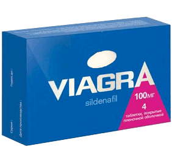

Φαρμακευτική εξαπάτηση : πώς κρύβουν το καλύτερο φάρμακο για την σεξουαλική ικανότητα!
Το νέο σκεύασμα είναι ήδη σχεδόν 2 χρόνια βοηθά τους κατοίκους της Ευρώπης και της Βόρειας Αμερικής εντελώς να απαλλαχτούνε από τα προβλήματα με την σεξουαλική δύναμη τους. Για πρώτη φορά η ιατρική έχει φτάσει στο σημείο ένα σκεύασμα να παρέχει τόσο ισχυρό θεραπευτικό και επανορθωτικό αποτέλεσμα.
Για την αποτελεσματικότητα αυτό αρκετές φορές υπερβαίνει το βιάγκρα (Viagra) – δίνει όχι μόνο την άμεση στύση αμέσως μετά τη λήψη του, αλλά και αποκαθιστά τη φυσική σεξουαλική δύναμη. Μαζί με αυτό δεν έχει παρενέργειες (καθόλου!)
Εν τω μεταξύ, στην Ελλάδα είναι σχεδόν άγνωστο. Ειδικά για τη σύγκριση των δύο σκευασμάτων παραθέτουμε τον πίνακα
 |
 Viagra |
|
|---|---|---|
| Δράση | Η αποκατάσταση της φυσικής σεξουαλικής ικανότητας για μεγάλο χρονικό διάστημα | Η τεχνητή (ανώμαλη) στύση από 2 έως 6 ώρες. |
| Πρόσθετο αποτέλεσμα |
|
δεν υπάρχει |
| Οι παρενέργειες | δεν υπάρχουν |
|
| Αντενδείξεις | δεν υπάρχουν |
Με προσοχή:
|
| Αρχή λειτουργίας |
Βελτιώνει την κυκλοφορία του αίματος στην περιοχή της πυέλου και διεγείρει τις νευρικές απολήξεις, οι οποίες είναι αρμόδιες για τη σεξουαλική διέγερση |
Αποτελεί μια παθολογική στάση του αίματος στο πέος, με την οποία η στύση δεν υποχωρεί |
| Διάρκεια δράσης |
μετά την ολοκλήρωση της αγωγής το αποτέλεσμα διατηρείται για πάντα |
το αποτέλεσμα είναι προσωρινό για την περίοδο χρήσης του σκευάσματος |
| Σύνθεση |
τα φυσικά φυτικά συστατικά, οι βιταμίνες και τα εκχυλίσματα βοτάνων, που δεν υποβλήθηκαν σε χημική επεξεργασία |
Το Sildenafil, η υδροχλωρική γλυκοζαμίνης και άλλες ουσίες που λαμβάνονται με τη χημική επεξεργασία |
Η δράση έχει αποδειχθεί με τη βοήθεια των ετών κλινικών δοκιμών, στο τελικό στάδιο των οποίων το σκεύασμα είχε δοκιμαστεί στους 1753 εθελοντές. Το 100% των συμμετεχόντων απαλλάχτηκαν από τα προβλήματα με την σεξουαλική ικανότητα τους. Είναι αξιοσημείωτο, ότι το 42% των συμμετεχόντων θεωρήθηκαν απελπιστικά χρόνιες ανίκανους άνδρες. Κανένα από τα νυν υπάρχοντα φάρμακα δεν μπορεί να έρθει κοντά σε αυτούς τους δείκτες. Αυτό το σκεύασμα είναι το μοναδικό το οποίο αποκαθιστά τη φυσική σεξουαλική δύναμη και όχι απλά προσωρινά γεμίζει το πέος με αίμα.
Τα Ευρωπαϊκά φαρμακευτικά δίκτυα αμέσως έβγαλαν το προϊόν στην αγορά, και μέχρι σήμερα αυτό το προϊόν είναι ο απόλυτος ηγέτης όπως εξειδικευμένων αξιολογήσεων από τους γιατρούς όσο και από τις ανώνυμες έρευνες του πληθυσμού. Γιατί τότε ακόμα δεν βλέπουμε στα φαρμακεία μας; Σε αυτό το ερώτημα μπορεί να απαντήσει μόνο ο εκπρόσωπος του φαρμακευτικού τομέα. Για να επιτύχουμε την αλήθεια, έχουμε κάνει όλες τις ερωτήσεις που μας ενδιαφέρουν στην Αναστασία Κυπρίνου, γενικό διευθυντή του δικτύου φαρμακείων "Pharmacy plus".
κ. Αναστασία, γνωρίζετε το προϊόν ; Πώς μπορείτε να εξηγήσετε το γεγονός ότι τα φαρμακεία μαζικά το αγνοούν;
Δεν υπάρχει σ’ αυτό κανένα μυστήριο. Ο φαρμακευτικός τομέας, αν και πρέπει να παρέχει στον πληθυσμό τα νέα πιο αποτελεσματικά φάρμακα, αλλά δεν πρέπει να ξεχνάμε ότι όλα γίνεται για συμφέρον των εταιριών. Ειδικά για τα δίκτυα των φαρμακείων — οι μονοπωλείς κάνουν δισεκατομμύρια ευρώ στις πωλήσεις τους, και να μειώσουν τις πωλήσεις σημαίνει να περιμένουν σοβαρές ζημιές!
πέρασε την πλήρη πιστοποίηση, και όλοι οι μεγάλοι παίκτες της φαρμακευτικής αγοράς, χωρίς αμφιβολία, γνωρίζουν την ύπαρξή του. Θυμηθείτε το κύριο πράγμα — ότι αποκαθιστά τη φυσική σεξουαλική δύναμη και δεν δίνει προσωρινό αποτέλεσμα! Αυτό σημαίνει ότι ο άνθρωπος δεν θα επιστρέψει για την αγορά του νέου φαρμάκου. Δηλαδή, οι πωλήσεις θα πέφτουν! Ποιος επιχειρηματίας μπορεί αυτό να επιτρέψει να γίνει;
Και πράγματι, αν οι άνθρωποι θα γιατρευτούνε, ποιος θα αγοράσει όλα αυτά τα φάρμακα;; Τα φαρμακεία απλά θα έχουν πτώχευση! Μετά από όλα είναι γνωστό, ότι τα "ταΐζουν" οι απλοί άνθρωποι! Όπως αν θλιβερό και ακούγεται, αλλά δεν υπάρχει άλλος τρόπος.
Είναι λυπηρό, αλλά στη χώρα μας απλά πρέπει οι μονοί μας να αναζητήσουμε πραγματικά χρήσιμα φάρμακα, έτσι απλά για αυτά δεν μας πει κανένας! Και μην περιμένετε διαφήμιση αυτής της κρέμας στην τηλεόραση. Οι Ευρωπαίοι άλλων χωρών και οι Αμερικανοί θα είναι υγείες και θα απολαύσουν τις χαρές της ζωής – και εμείς θα συνεχίσουμε να τρέχουμε κάθε μήνα στα φαρμακεία.
Η επιλογή για την φροντίδα του εαυτό σου, μέχρι σήμερα είναι ακόμα μόνο μια — να παραγγείλεις την στην επίσημη ιστοσελίδα του κατασκευαστή. Δόξα τω Θεώ, το τέτοιο προϊόν έχει ήδη εμφανιστεί. Και σήμερα στο πλαίσιο του ενιαίου εθνικού προγράμματος , μπορείς να λάβεις την με έκπτωση 50%
Το πρόγραμμα αυτό δυστυχώς είναι διαθέσιμο μόνο μέχρι Ακριβώς πριν από αυτή την ημερομηνία θα πρέπει να κάνεις την παραγγελία για να λάβεις τη !